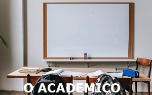

Viver plenamente é assimilar uma nova aprendizagem a cada dia, prestes a completar 47 anos (18/03/1975), decidi realizar um sonho de realmente aprender a programar. Apesar de ter formação em Engenharia, minha carreira profissional se desenvolveu na área de gestão de tecnologia, com isso acabei tendo muito contato com desenvolvimento nas mais diversas linguagens, porém, como gestor, sempre busquei conhecer o suficiente para saber cobrar e como cobrar, mas nunca me aprofundei em nenhuma linguagem. Hoje, com uma vida financeira e profissional estável, depois de ter desenvolvido com muita dificuldade o site, o sistema de gestão e o CRM de minha corretora (Pilon Vida e Saúde Corretora de Seguros), ingressei no desafio de cursar "Sistemas para Internet" na FIAP. Conheça um pouco mais de minha vida profissional, acadêmica e meus passatempos.
